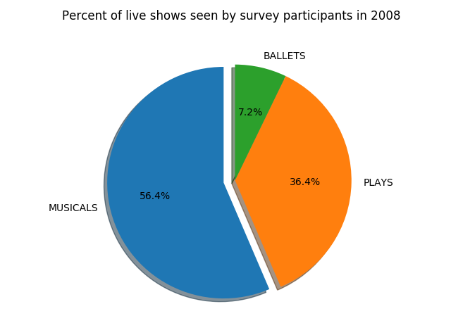
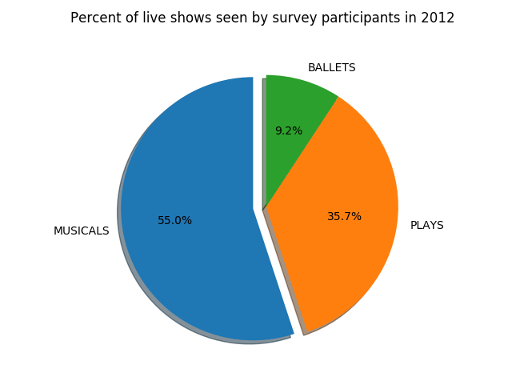

Data Visualization
This graph shows that since 2002, the amount of live shows 18 to 35 year-olds have been going to, has been decreasing. This may be because the cost of seeing professional performances have gone up while funding for the arts has become more and more scarse. There are probably not as many community or school opportunities to attended live performances. The graph makes sense from this perspective and I'm sure there are many other factors that are a part of whether someone went to a performance or not. I think this data would be interesting to anyone who wanted to make a push for increased arts education, for funding of community productions, or for decreasing the prices for professional performances. I would be interested to see data from 2016 and see if there is any increase in the based upon "Hamilton" opening and creating more publicity for Broadway.
The breakdown for each year the survey was taken is below.
 
These graphs are very interesting to me because while the overall number of shows decreases, the breakdown of what type of show is relatively similar. I also find it fascinating that for each year the number of musicals seen is greater than the number of plays and ballets combined. This makes me think that musicals are more accessible or more popular to the 18 to 35 year-olds going to live performances than those not. I'm not surprised that the percentage of those attending ballets is low but I would have thought plays and musicals may have been more even. These charts would be interesting to someone who, again, wants to push for more arts education. They could see that musicals are more popular to the general public of 18 to 35 year-olds and use musicals as a way of outreach or education.